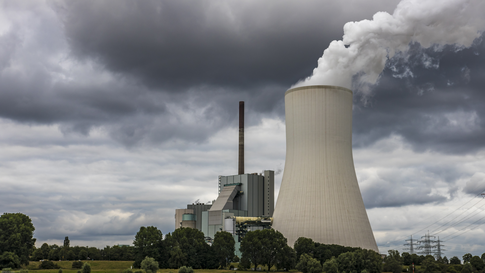
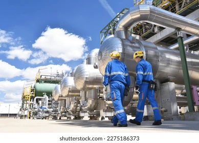
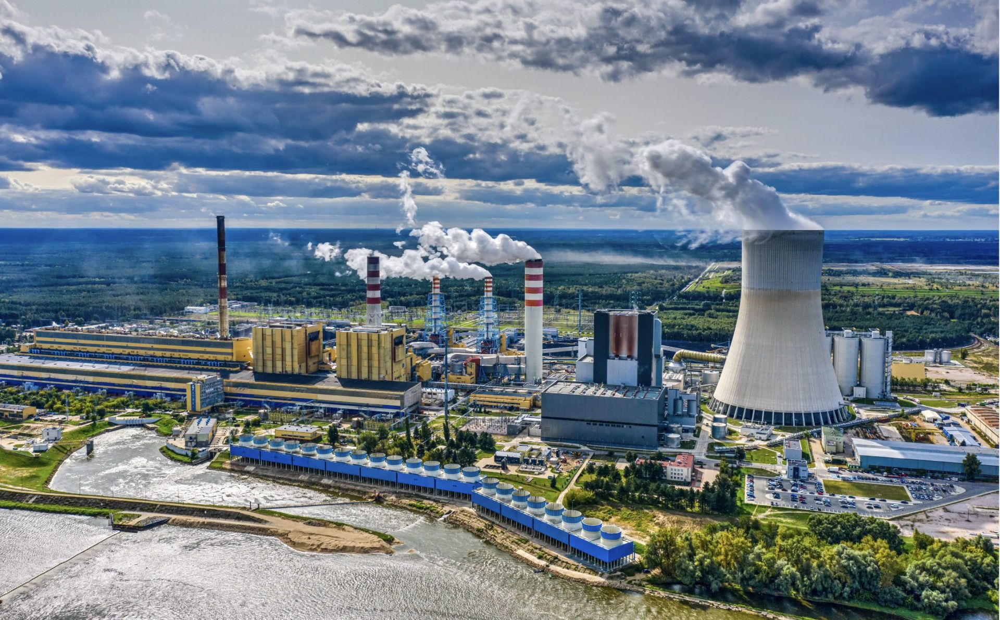
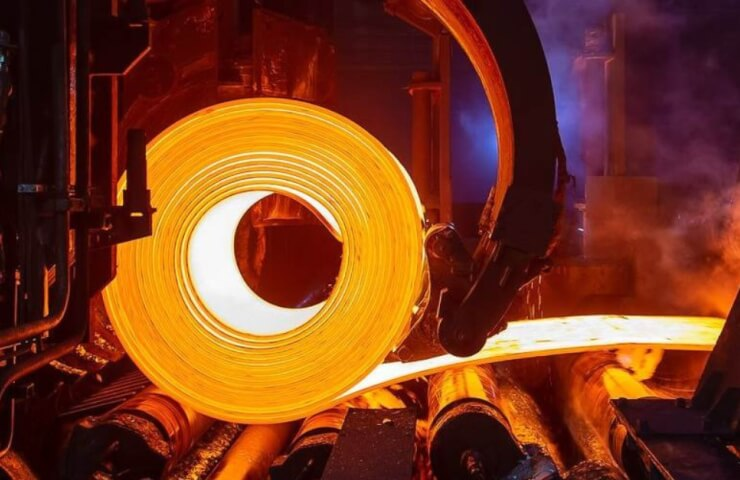
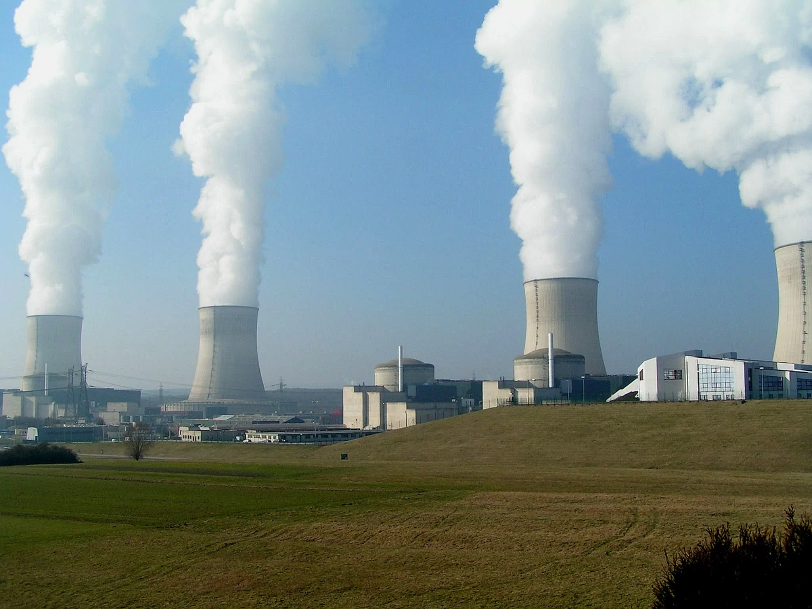

Gas Analyzer
At Agua Instruments, we specialize in providing advanced Gas Analyzers designed for precise Online Gas Monitoring and Continuous Gas Analysis. Our Gas Quality Monitoring solutions cater to various industrial applications, ensuring compliance with safety standards and enhancing operational efficiency. Our analyzers are built to deliver reliable data in real-time, helping industries maintain optimal performance and safety.

Why Choose Agua Instruments for Gas Quality Monitoring?
Advanced Technology
Our gas analyzers leverage cutting-edge technology for precise and reliable measurements.
ATEX Certified Gas Analyzers
Our products are ATEX certified, ensuring safety in explosive atmospheres.
Real-Time Gas Analysis
Benefit from real-time data to make informed decisions and maintain operational efficiency.
Custom Solutions
We offer tailored solutions to meet the specific needs of different industries.
Expert Support
Our team provides comprehensive support, from installation to maintenance and technical assistance.
Monitor and control gas emissions in factories, refineries, and chemical plants to ensure safety and regulatory compliance.

Ensure safety and efficiency by detecting gases in drilling, production, and processing operations.

Optimize combustion processes in power plants by monitoring gas composition.

Perform accurate gas analysis in high-temperature environments for improved product quality.

Track air quality and gas emissions to protect the environment and comply with regulations.